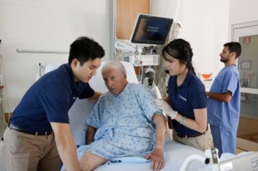

Anosha Farrukh
My name is Anosha Farrukh. I am currently a third-year undergrad student at UCR. I am currently on the pre-med route as I have always been passionate about healthcare and want to be in the field. Being a part of clubs in highschool such as HOSA, and an environmental based club known as “Our Future”, being on the board, I was in charge of arranging events such as fundraising walks, beach clean-ups, and recycling drives. I also got the opportunity to volunteer at my local hospital where I got to interact with patients and develop a perspective on the aspects of healthcare through tasks such as discharging patients, delivering food trays, performing blood/specimen runs, delivering lab reports, and running information desks in order to convey optimum service to both patients and visitors. Coming into Undergrad, I got the opportunity to work as a COPE Health Scholar at RCH, where I perform similar activities to above except focusing on a more hands on approach where I can build those interpersonal interactions with the patient and the patient care team as well.
I also used to be a part of a youth group for my local mosque where I helped organize events we would volunteer in, such as soup kitchens, homeless shelters, the LA regional Food Bank, the Oxnard Soup Kitchen, and working with the ILM Foundation to participate in Humanitarian Day in downtown LA. Being involved in a couple of volunteering opportunities like this made me realize the privilege of volunteering and the gratification that comes with it. Offering that raw human connection; eye to eye, hand to hand, and heart to heart is what healthcare stands for. In high school I was the President of a youth group where we would volunteer as a group at soup kitchens, food banks, and every so often we would participate in an event called Humanitarian Day in Downtown Los Angeles where “People helping People” was the widely used slogan. Being an active member of a youth group, this expression was the aspect I felt was the most important to encapsulate into our participation in this event. We developed a fundraising initiative to gather funds to craft care packages for those in need in the Downtown Los Angeles region through a collaborative effort. Once we arrived at the event, we set up our booth and began passing out care packages to the elongated configuration of the homeless community of downtown Los Angeles. Raising over $3500 of donations from fellow members of my community, my youth group and I bought necessities like hygiene products. Additionally, we wrote and included positive messages in the packages to provide words of encouragement for those that might feel as if they are losing optimism.
Building these connections with merely the exchange of a smile brought me a sense of utter gratitude. There were some instances in which I witnessed tears in these people's eyes; these tears made me acknowledge the essence of what the true meaning of humanity signifies. Being a helping hand for hundreds of homeless people in this event brought me a sense of moral consciousness. I realized that to stand up as a leader, as a guide, and most importantly as a human to make our community a better place to live in is imperative.
Experience
Student
• studied bio
• did research at the School of Medicine
• was a lab assistant for Professor Casselman
Experience
COPE Health Scholar
• fed, bathed, ambulated patients
• took vital signs
• administered EKGs
Experience
Vice President of Internal Affairs
• worked as a leader to help other pre-med students
• hosted presentations
• reached out to other pre-med organizations and collaborated
Education
UC Riverside
Portfolio
